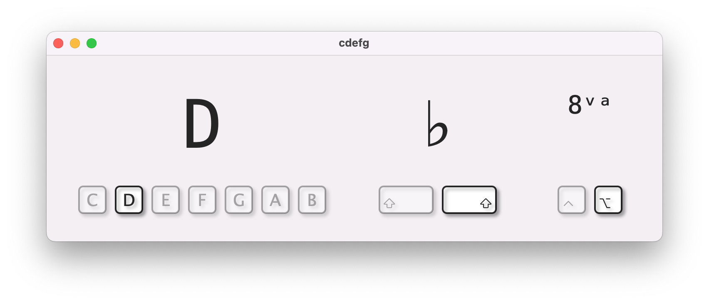

Use your computer keyboard to play music notes by letter.
Unlike other tools that require you to figure out how the piano layout maps to your computer keyboard, this one lets you use the actual letter of the note you want to play.
Want to hear C? Type C.
C♭? Hold left shift and type C.
C♯? Right shift.
Octave down or up? Control or Option.
For help, email me